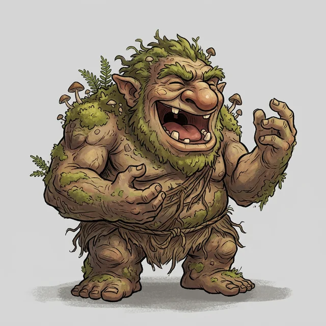
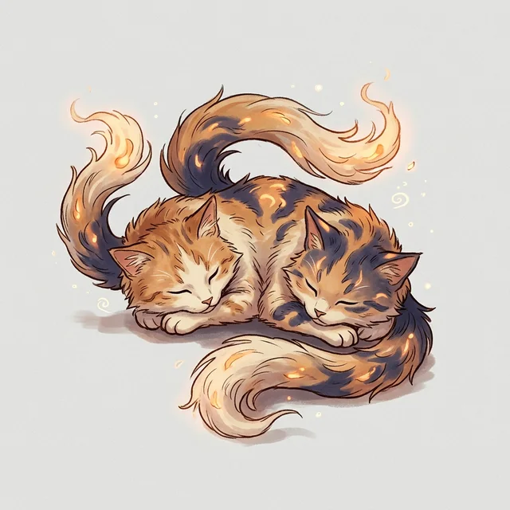
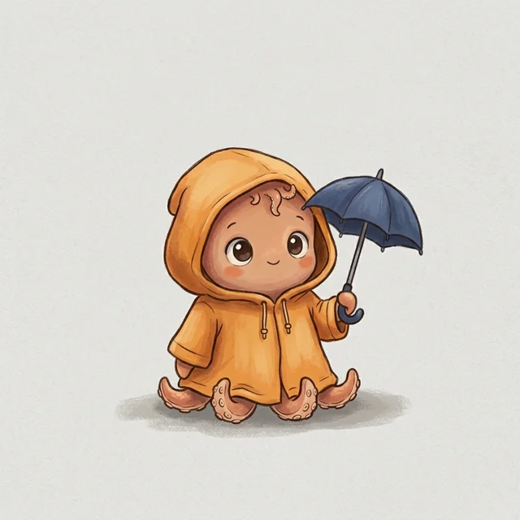
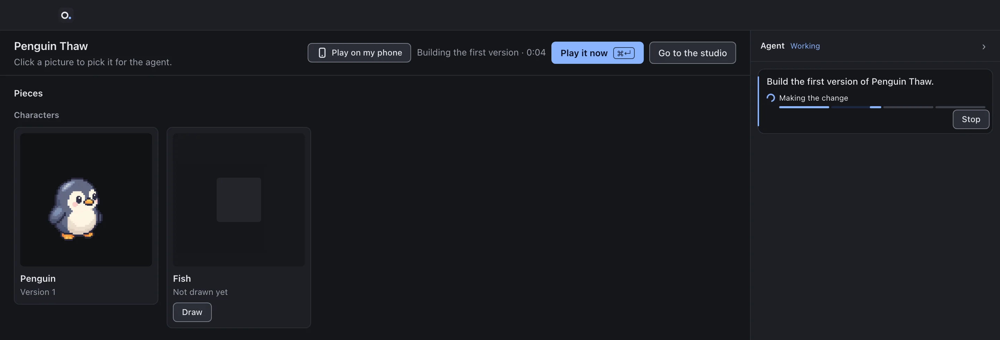
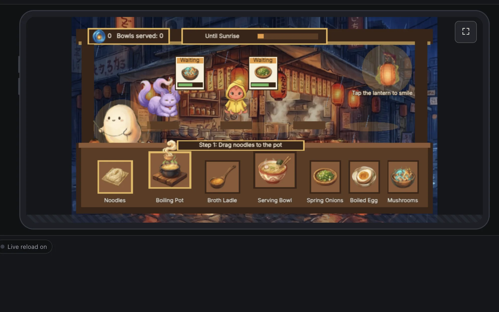

Wisp
The cook
A tiny lantern ghost who runs the noodle stall, one busy night at a time.
A game studio on your desktop. Tell it your idea, plan it with an AI partner and play the first version on your computer or your phone. Then keep asking for changes until it feels right.
For macOS, Windows and Linux
Every picture on this page, from the rainy street to the regulars at the counter, came out of one short planning chat in Onigiri Studio.
The cook
A tiny lantern ghost who runs the noodle stall, one busy night at a time.

A regular
Big, slow and always hungry for a second bowl.

A regular
Three tails, one nap and a strong opinion about toppings.

A regular
Comes in from the rain with eight arms and a very small umbrella.
Drawn by Nano Banana 2.1 in the studio's plan room. The plan and the code were written with Gemini 4 Argon.
You bring the idea and the taste. The studio does the planning, the drawing, the code and the checks. It asks you whenever a choice is yours to make.
A sentence, a mood, a game you love or a sketch. Type it in or add a picture. That is enough to begin.

The planning partner asks good questions and writes the plan beside you. Your own words stay yours. It only suggests, and you keep, change or turn down each idea.

Pick a name, the devices it runs on and how people play it. You see what the first version should cost before anything starts.

The studio draws the art, writes the code and checks that your game runs. You don't have to worry about anything to do with builds.

Try the first version right in the studio or on your phone. Then ask for the next change in plain words.

The first version is only the start. Ask for changes in plain words and the studio keeps the game on track.
Ask for anything in plain words. Each ask joins a queue you can watch, reorder or stop. You try each change and keep only what you like.

The studio writes down how your game plays, how it looks and how it is built. Every agent reads those rules before it changes a thing.

Build for the web, Android, iOS, macOS, Windows and Linux from one place. The studio tells you what each one needs and fetches the tools.

Connect Anthropic, OpenAI or Google once. Pick the model and the effort for each job.
Every call is counted. You see what a step should cost before it starts.
Each game is a normal folder on your computer with its whole history kept in git.
Onigiri Studio 0.13.1. Connect your own Anthropic, OpenAI or Google account and pay your provider for what you use.
No. You describe what you want and pick from what the studio shows you. If you do code, every game is a normal project you can open in your own editor.
A computer running macOS, Windows or Linux and an account with Anthropic, OpenAI or Google for the models. The studio fetches everything else it needs.
2D games and simple 3D games for phones, tablets and computers, played with touch, a keyboard and mouse or a controller. Games are made with the LittleJS engine, which draws in 2D and in 3D. More engines are on the way.
On your computer, in its own folder. Your plan, your art and your code stay with you.
You pay your model provider for what the studio uses. The studio shows what a step should cost before it starts and counts every call as it goes.